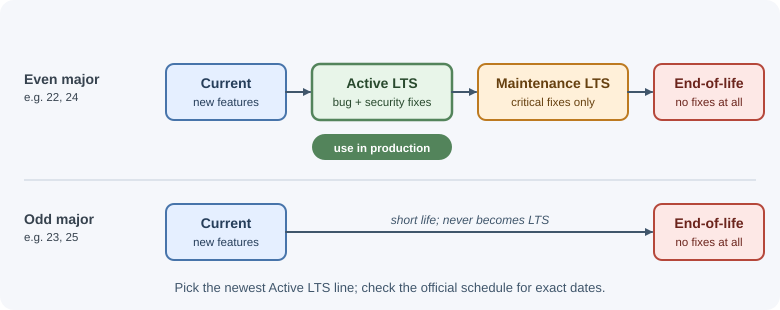
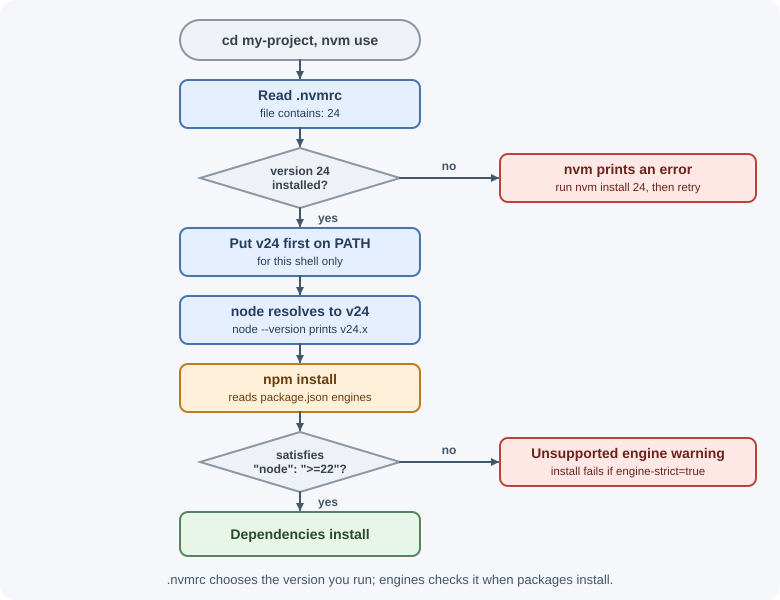

Installing Node.js and Managing Versions¶
Before writing a backend in Node.js you need the runtime installed, and you need to know which version to use. This page explains the Node.js release lines, the common ways to install and switch versions, and the everyday commands for running code.
Why it matters¶
Different projects often need different Node.js versions. A package may require a newer API, a deployment platform may support only certain lines, and an old project may break on a newer runtime. Pinning and switching versions deliberately avoids "works on my machine" problems and keeps production on a supported, security-patched release.
Real-world usage¶
Hosting platforms read the same version files you use locally, so pinning a version decides what runs in production:
- Heroku chooses the Node.js version from the
engines.nodefield inpackage.json(for example"26.x"). If the field is missing, it picks its current default major automatically, which can change under you (Heroku Dev Center: Node.js support). - Vercel lets
engines.nodeinpackage.jsonoverride the Node.js major version selected in the project settings (Vercel docs: Node.js versions). - Netlify builds with the version in a
NODE_VERSIONenvironment variable, a.node-versionfile, or an.nvmrcfile, any of which overrides the setting in its UI (Netlify docs: Manage build dependencies). - AWS Lambda deprecates a runtime when its language version reaches the end of community LTS. After that date it blocks first the creation and then the updating of functions on that runtime, which forces teams to plan upgrades (AWS Lambda docs: Runtimes).
- GitHub Actions
actions/setup-nodecan read the version for CI from.nvmrc,.node-version, orpackage.jsonthrough itsnode-version-fileinput, so CI uses the same version as development (actions/setup-node README).
Popular tools and providers: nvm, fnm, mise, and Volta (unmaintained) for
switching versions; official node Docker images; Heroku, Vercel, Netlify,
and AWS Lambda for hosting.
How it works¶
Release lines¶
Each Node.js major version moves through phases:

| Phase | What it means | Use it for |
|---|---|---|
| Current | The newest major version; receives new features and can change quickly. | Trying new features, testing libraries ahead of time. |
| Active LTS | Long-Term Support: stable, receives bug and security fixes. | Production applications. |
| Maintenance LTS | Only critical bug and security fixes. | Existing production apps planning an upgrade. |
| End-of-life (EOL) | No more fixes, including security fixes. | Nothing; upgrade. |
Up to Node.js 26, a new major version came out roughly every six months. Even-numbered majors became LTS releases, while odd-numbered ones stayed in Current for six months and then reached end-of-life. The diagram above shows that model. An LTS line typically receives critical fixes for about 30 months in total.
The schedule changed with Node.js 27: majors now come out once a year, and every major becomes LTS after its six-month Current phase. Each one is preceded by a new Alpha phase for early testing. Always check the official release schedule before choosing a version, because the project sets the exact dates.
Rule of thumb
Use the latest Active LTS version for production and new projects unless a dependency or platform requires something else.
Version numbers¶
Node.js uses semantic versioning: MAJOR.MINOR.PATCH, for example
24.3.1. A major version can contain breaking changes; minor versions add
features; patch versions fix bugs and security issues. Staying on the latest
patch of your major line is important for security.
Ways to install¶
| Method | How it works | Good for |
|---|---|---|
| Official installer (nodejs.org) | Installs one version system-wide. | Beginners, a single project. |
| OS package manager (Homebrew, apt, winget) | Installs from your OS's repository. | Quick setup; versions may lag behind. |
| nvm (Node Version Manager) | Installs many versions in your home folder and switches between them per shell. | Developers working on several projects (macOS/Linux; nvm-windows is a separate project for Windows). |
| fnm (Fast Node Manager) | A fast, cross-platform version manager; can switch automatically when you enter a folder. | Same as nvm, including Windows. |
| mise | A general tool-version manager (Node.js, Python, and more) that switches per folder. | Teams managing several languages. |
| Volta | Pins the Node.js and package-manager versions in package.json and switches automatically. |
Existing setups only: the project is unmaintained, and its authors recommend migrating to mise. |
| Docker image | node:<version> images contain the runtime. |
Consistent builds and deployments. |
Version managers are preferred for development because they let each project use its own version without administrator rights.
Pinning the version for a project¶
Two common files tell people and tools which version to use:
.nvmrc(read by nvm and fnm) contains just the version:
24
- The
enginesfield inpackage.jsondocuments the supported range:
{
"engines": {
"node": ">=22"
}
}
npm warns when the running Node.js does not satisfy engines. With
engine-strict=true in .npmrc, installs fail instead.

When to use and when not to use¶
Use a version manager (nvm, fnm, or mise) when:
- You work on more than one project, or a project's
.nvmrcdiffers from your system version. - You need to test a library against several Node.js majors.
- You cannot or should not install software system-wide.
Use the official installer or an OS package manager when:
- You need exactly one Node.js version on a machine, such as a student laptop or a single-purpose server.
Use a pinned Docker image (node:24-alpine, or an exact patch tag) when:
- Development, CI, and production must run byte-for-byte the same runtime.
Avoid:
- Odd-numbered Current releases up to Node.js 26, and any Current release, in production. They change faster and have short support windows.
- Floating tags such as
node:latestin production images, which can jump to a new major on the next rebuild.
| Option | Switch per project | Needs admin rights | Typical use |
|---|---|---|---|
| Official installer | No | Yes | One version per machine |
| OS package manager | No | Usually | Quick setup; versions may lag |
| nvm / fnm / mise | Yes | No | Developers with several projects |
| Docker image | Yes (per image) | No (Docker needed) | CI and production parity |
Practical examples¶
Checking what is installed¶
node --version # e.g. v24.3.1
npm --version # npm ships with Node.js
which node # macOS/Linux: where the binary lives
where node # Windows
Using nvm¶
nvm install --lts # install the latest LTS release
nvm install 22 # install the latest 22.x
nvm use 22 # switch this shell to 22.x
nvm ls # list installed versions
nvm alias default 22 # use 22.x in new shells
nvm use # read .nvmrc in the current folder
The REPL¶
Running node with no file opens the REPL (Read–Eval–Print Loop), an
interactive prompt for experimenting:
$ node
> 2 + 3
5
> _ * 10 // _ holds the last result
50
> const os = await import("node:os")
> os.platform()
'linux'
> .help // list REPL commands
> .exit // or press Ctrl+D once, or Ctrl+C twice on a blank line
Useful REPL commands: .help, .exit, .clear, .editor (multi-line
mode), .load file.js, and .save file.js.
Running a file¶
// hello.js
const name = process.argv[2] ?? "world";
console.log(`Hello, ${name}!`);
node hello.js # Hello, world!
node hello.js Ada # Hello, Ada!
Restarting on file changes¶
node --watch server.js
--watch restarts the process whenever the entry file or a file it imports
changes. It replaces the need for tools such as nodemon in many projects.
Use --watch-path=./src to watch a specific folder instead; this turns off
the automatic watching of imported files.
Loading environment variables from a file¶
node --env-file=.env server.js
Node.js reads KEY=value lines from the file into process.env before your
code runs. Never commit .env files that contain secrets. See
process, environment variables, and configuration.
Importing built-in modules with node:¶
import { readFile } from "node:fs/promises";
import path from "node:path";
import { createServer } from "node:http";
The node: prefix makes it clear the module is built in and cannot be
shadowed by an npm package with the same name. Some newer modules, such as
node:test and node:sqlite, are only available with the prefix.
Running package binaries with npx¶
npx eslint . # run the project's local eslint
npx create-vite@latest my-app # download and run a package once
npx runs a binary from node_modules/.bin. If the package is not
installed, it asks before downloading it into the npm cache (--yes skips
the prompt). See
npm and package management.
Corepack and other package managers¶
Corepack is a tool that manages Yarn and pnpm versions declared in the
packageManager field of package.json:
{ "packageManager": "pnpm@9.12.0" }
Corepack is bundled with Node.js from 14.19.0 up to, but not including,
25.0.0. If your Node.js does not include it, install it with
npm install -g corepack, or install pnpm/Yarn directly.
Running TypeScript files¶
Node.js can run .ts files directly by stripping type annotations
before execution. This is on by default from Node.js 22.18.0 and 23.6.0, and
stable from 24.12.0 and 25.2.0:
node app.ts
Type stripping removes types; it does not type-check your code, and it
ignores tsconfig.json. It supports only syntax that can be erased:
enum declarations, namespaces with runtime code, and parameter properties
fail with an error. Keep running tsc --noEmit or your editor's checker for
type errors, and use a tool such as tsx when you need full TypeScript.
Best practices¶
- Use a version manager in development and commit
.nvmrcso the whole team, and CI (actions/setup-nodewithnode-version-file), uses the same major version. - Use the same major version locally, in CI, and in production. Pin the
Docker base image to a major version, for example
node:24-alpine. - Upgrade to the latest patch release regularly; patch releases often include security fixes.
- Plan major upgrades before your line reaches end-of-life. Read the changelog for breaking changes and run your test suite on the new version.
- Avoid installing Node.js with
sudopackage managers when you need multiple versions; it leads to permission problems with global packages.
In production¶
- The platform picked a different major.
- Symptom: the app works locally but fails after deploy with
TypeError: ... is not a functionor aSyntaxErroron newer syntax. - Detect: log
process.versionat startup and compare it with.nvmrc. - Cause: no
engines.nodefield, so the platform used its own default. - Fix: set
engines.node(for example"24.x") and.nvmrcto the same major. - A floating Docker tag jumped versions.
- Symptom: an image rebuilt without code changes starts failing tests.
- Detect:
node --versionin the build logs differs between the old and new image. - Cause:
FROM node:latestorFROM node:ltsnow points to a newer major. - Fix: pin
node:24-alpineor an exact patch tag, and upgrade on purpose. - Native add-ons break after an upgrade.
- Symptom: the process fails at startup while loading a compiled
.nodefile from a dependency. - Detect: the error stack points into that package's folder in
node_modules. - Cause: add-ons written against the V8 or NAN APIs must be recompiled for each Node.js major. Add-ons built on the ABI-stable Node-API keep working across majors.
- Fix: reinstall dependencies (
npm ci) in the same image and Node.js version that runs in production; never copynode_modulesfrom a developer machine. - A serverless runtime reached its deprecation date.
- Symptom: deployments to AWS Lambda fail because function updates on the old runtime are blocked.
- Detect: the platform's deprecation notices, or the runtime ID such as
nodejs22.xin your infrastructure code. - Cause: the runtime's Node.js line reached end of LTS.
- Fix: track Node.js end-of-life dates and upgrade a major well before the platform's deadline.
Important terminology¶
- LTS (Long-Term Support): A release line that receives fixes for an extended period and is recommended for production.
- Current: The newest major release line, with the latest features.
- End-of-life (EOL): A release line that no longer receives any fixes.
- Version manager: A tool such as nvm, fnm, or mise that installs and switches between Node.js versions.
- REPL: The interactive Read–Eval–Print Loop opened by running
node. engines: Thepackage.jsonfield that declares supported Node.js versions.- npx: A command that runs package binaries, installing them temporarily if needed.
Common mistakes and misconceptions¶
- Running a Current release in production. Up to Node.js 26, odd-numbered majors never became LTS and reached end-of-life after about six months.
- Staying on an EOL version. It no longer receives security patches, even for serious vulnerabilities.
- Assuming
enginesblocks installs. By default npm only warns. - Treating
--watchas a production tool. It is for development; use a process manager or container orchestrator in production. - Believing type stripping type-checks code. It only removes types.
Revision questions¶
- What is the difference between Current, Active LTS, and Maintenance LTS?
- Why are version managers preferred over a single system-wide install?
- What do
.nvmrcand theenginesfield each do? - What does
node --watchdo, and where should it not be used? - Why should you import built-in modules with the
node:prefix? - What does running a
.tsfile with Node.js do and not do?